漆面常见缺陷有颗粒、缩孔、缺漆、碰划伤、流痕、凹凸伤等。
|
漆面类型 |
缺陷类型 |
修补工艺 |
|---|---|---|
|
高光（亮光漆面） |
凹凸伤 |
①~⑩ |
|
颗粒、缩孔、缺漆、碰划伤、流痕等缺陷。 |
③~⑩ |
|
|
哑光漆面 |
凹凸伤 |
①~⑧、⑩ |
|
颗粒、缩孔、缺漆、碰划伤、流痕等缺陷。 |
③~⑧、⑩ |
|
漆面缺陷类别 |
图片示例 |
缺陷特征 |
|---|---|---|
|
颗粒 |
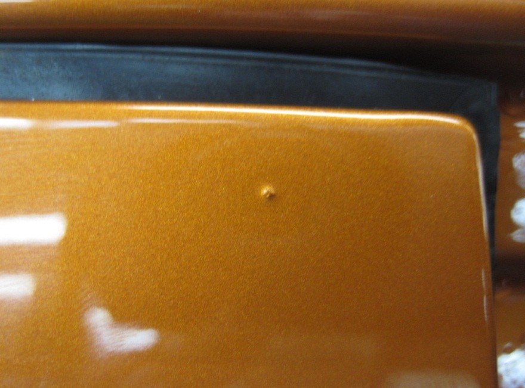 |
涂膜表面或局部出现颗粒状凸起物 |
|
缩孔 |
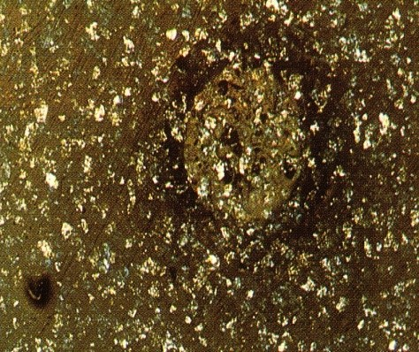 |
弹坑形状的凹陷，平均大小以毫米计。 |
|
掉漆 |
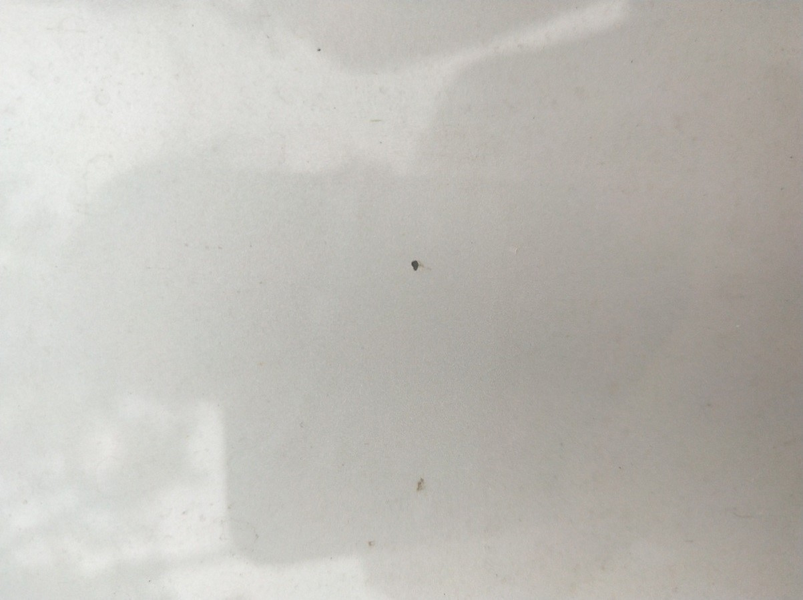 |
涂膜表面清漆层剥落或整个漆膜剥落 |
|
碰划伤 |
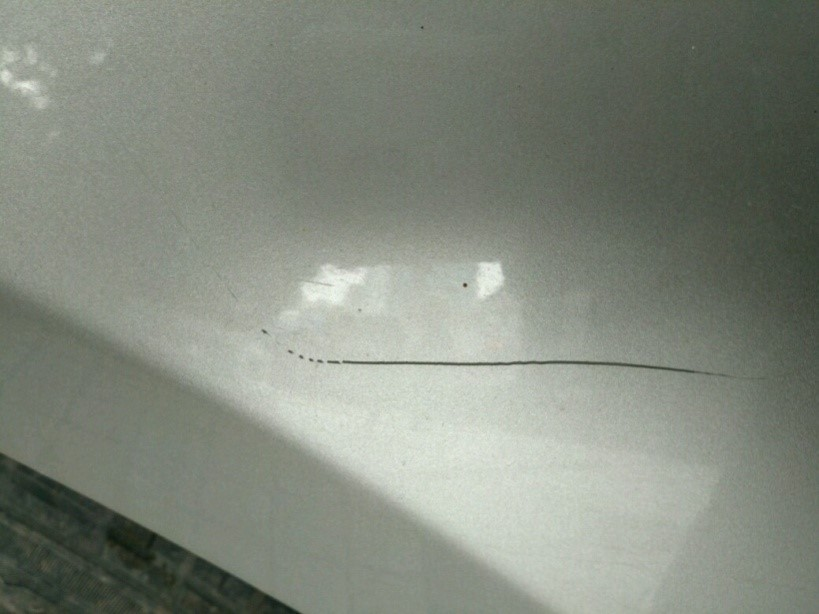 |
涂膜表面被硬物划过之后出现划痕 |
|
流挂 |
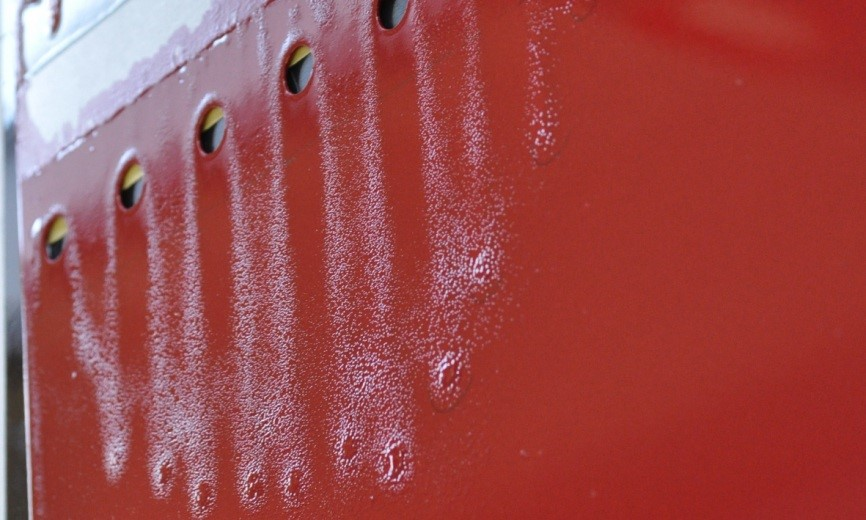 |
垂直表面油漆出现下滑的缺陷 |
|
凹凸伤 |
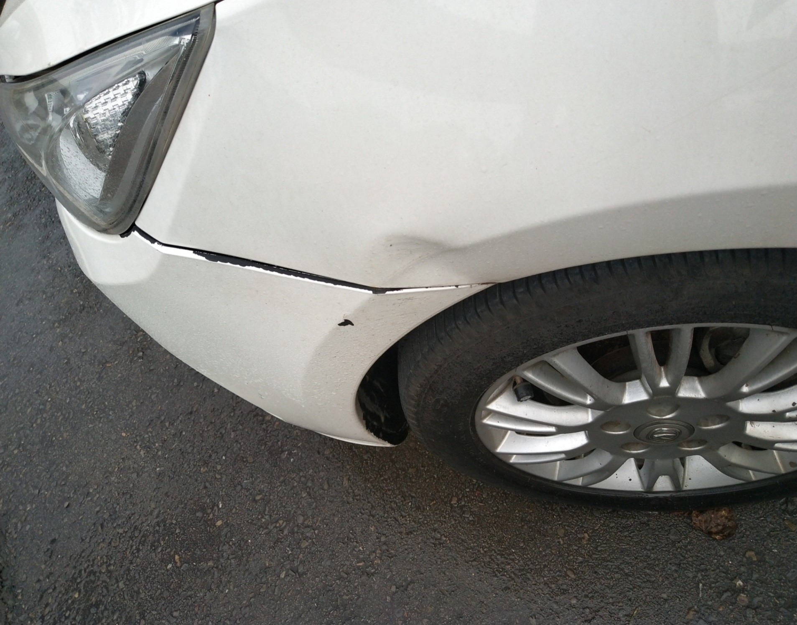 |
膜表面被外力撞击后使钣金凹陷出现的缺陷 |
对凹伤处进行扳金校正：
工具准备：木榔头、校正棒、铁块；
操作要求：扳金时,一手按住凹伤部位，另一手握校正棒向外顶，用力不宜过大，且同时用手感觉加目测判断凹伤处的平整度。
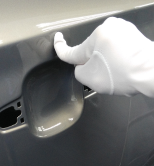
对凹伤扳金处进行刮灰：
工具准备：灰板、灰刀；
操作要求：刮灰时先将凹陷部位填满，再采用多向刮法把刮灰部位扩大，一般大于凹伤3倍，待刮平后再刮一层灰浆（刮灰标准：面积≥5cm×5cm不允许刮灰；面积≤5cm×5cm，整车刮灰总共不超过5处；面积≤5cm×5cm，A、B级面刮灰总共不超过3处；钣金后凹凸伤厚度≥150um不允许刮灰）。
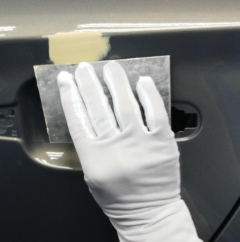
对漆面缺陷进行打磨：
工具准备：打磨块，打磨机；
操作要求：用800#砂纸进行圆弧打磨，打磨后检查是否露出钣金。若有钣金露出，需对露出钣金的部位喷涂防锈底漆（膜厚控制在5 um～10um，静置1min～2min再进行面漆修补，太厚不能快速干燥，膜厚太薄达不到防锈效果）。
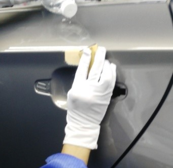
遮蔽：
操作要求：用高温胶带将遮蔽纸粘贴好后对修补处以外的漆膜进行遮蔽，防止其他部位污染。用铝箔纸对修补处旁大灯、门拉手、玻璃等不耐温的装配件进行遮蔽。
对修补处喷涂色漆：
工具准备：修补罐枪；
喷枪流量：30～70ml/min；
喷嘴距被喷涂面：250±50mm；
喷涂雾幅：200～350mm；
雾幅重叠率：单色漆1/2～3/4；金属漆2/3～3/4；
运行速度：单色漆0.8～1.5m/s；金属漆1.2～1.5m/s；左右移动要匀速，喷嘴与被喷涂面保持垂直，避免漆花、色差等缺陷的出现。
对修补处喷涂清漆：
工具准备：修补罐枪；
喷枪流量：30～70ml/min；
喷嘴距被喷涂面：250±50mm；
喷涂雾幅：200～350mm；
雾幅重叠率：1/2～3/4；
运行速度: 0.8～1.5m/s；左右移动要匀速，喷嘴与被喷涂面保持垂直。喷清漆覆盖面积比色漆宽5cm以上，避免出现色漆外露现象。
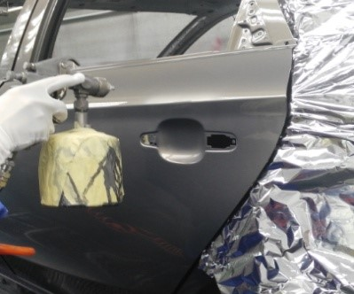
对修补处喷消痕剂：
工具准备：修补罐枪；
操作要求：与清漆喷涂一致，对清漆修补接头进行雾化，直到消除接头印。
对修补处进行烘烤：
工具准备：电吹风，烤灯；
操作要求：用电吹风对修补后的边角部位进行预烘烤；
电吹风与修补部位距离：10～20cm；
运行速度：0.8～1.5m/s；
烤灯烘烤距离：300mm；
烤灯烘烤温度：80～100℃；
烘烤时间：20～30min；
烘烤后修补漆面硬度达到HB硬度(三菱铅笔)。
对修补处进行研磨、抛光、清洁：
工具准备：打磨块、抛光机、研磨机；
操作要求：轻微的颗粒、清漆层缩孔、轻微痱子、飞漆污染用1500#砂纸平贴于漆膜表面，进行左三圈右三圈研磨，注意边磨边看，防止漆膜磨穿，抛光时先在研磨处沾少许抛光液，用抛光机进行抛光，然后用3M擦拭纸擦拭干净。
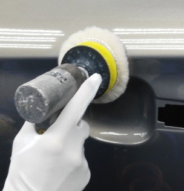
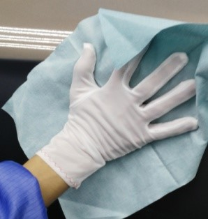
检查漆面；
喷涂后质量要求：漆膜平整光滑完整、丰满均匀；与车身其他部位目视无可见（光线充足，距离车身0.5m处观察）色差、光泽差异、缺漆、颗粒、纤维、缩孔、针孔、桔皮、流挂、砂纸痕迹等缺陷。